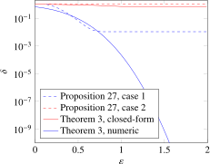
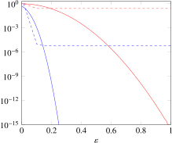

3.2.1 Counting queries
The initial motivation for limiting the attacker’s background knowledge was to show that, under this assumption, some noiseless mechanisms preserve the individuals’ privacy [46]. A typical example is a counting query, which answers the question “How many users satisfy ?” for some property . We can model this by a data-generating distribution where each record is either or with some probability , and we want to measure the privacy of the mechanism . Records are assumed to be independent, and the adversary is assumed to know some portion of the records. As an immediate consequence of Theorem 2 and Proposition 26, it does not matter whether the attacker can modify, or only see, this portion of records: the values of and are identical for APKDP and PPKDP.
Furthermore, the closer are to or , the less randomness is present in the data. For extremely small or large values of , the situation is very similar to one where the attacker exactly knows . As such, it is natural to assume that among the records that are unknown by the attacker, all are between and , for some not too close to . This assumption can easily be communicated to non-specialists: “we assume that there are at least 1000 records that the attacker does not know, and that their level of uncertainty is at least 10% for these records.”
Initial asymptotic results in this context appeared in [46] and more precise bounds were derived in [176]. In the special case where all are equal to a fixed value , Theorem 5 in [46] and Theorem 1 in [176] show that counting queries are APKDP with (for small , and increasing ) and (for small , and increasing ). This provides tiny values of and for moderate values of and . However, the assumption that all are identical is unrealistic: in practice, there is no reason to assume that all users have an equal chance of satisfying . Theorem 7 in [46] and Theorem 2 in [176] show that without this assumption, the obtained is still small: , but the upper bound obtained on is significantly larger: . This is more than what is typically acceptable; a common recommendation is to choose .
In the following theorem, we show that the exponential decrease of with still holds in the general case where all are different. For simplicity, we assume that the attacker has no background knowledge: because all records are independent, adding some partial knowledge has a fixed, reversible effect on the output space, similarly to -reducibility. In this case, having the attacker know records out of is the same as having the attacker know no records among .
Theorem 3. Let be a distribution that generates records, where is the result of an independent Bernoulli trial of probability . Let be such that for all , . Let be defined by . Then is -APKDP, for any and such that:
where and are independent random variables sampled from a binomial distribution with trials and success probability . For a fixed , this condition is satisfied if:
which gives .
Proof. The proof uses existing results on privacy amplification by shuffling: in [27, 140], the authors show that adding noise independently to each data point, and then shuffling the results (hiding from the attacker which record comes from which user), provide strong DP guarantees. Even though our problem looks different, the same reasoning can be applied. First, we show that can be seen as applying randomized response on each record. Then, since a counting query is a symmetric boolean function, it can be composed with a shuffle of its input, which allows us to use amplification by shuffling.
Let us formalize this intuition. A Bernoulli trial of probability (denoted ), with , can be decomposed into the following process:
- Generate .
- If , return .
- If , return .
This can be seen as a randomized response process applied on some input , itself random: , where is a distribution generating records, where the -th record is generated by , and is a binary randomized response process with parameter .
Further, note that can be seen as the composition between itself and a pre-shuffling phase: , where is a function that applies a random permutation to the input records. Thus, . We can now apply Theorem 3.1 in [27] and its proof to show that is -DP for within the constraints above (with and ). By post-processing, is also -DP, which directly yields that is -APKDP.
Note that we omitted a small technical detail: conditioning on is not identical to conditioning on , since no noise is added to the record in the former case. To fix this, we need to define as randomizing all records except a fixed one . The proof of Theorem 3.1 in [27] assumes that no noise is added to the target record, so the result still holds. □
We compare this result with the previous state-of-the-art. First, we reformulate a previously known result from [176] that applies to our setting.
Proposition 27 (Theorem 3 in [176]). Let be a distribution that generates records, where is the result of an independent Bernoulli trial of probability , and let be defined by . Let and be respectively the average second moment and average absolute third moment of the . Then for any , is -APKDP, with
Proof. For , this is a direct application of Theorem 3 in [176]. Changing the value in its proof (Appendix A.2) allows us to obtain the more general formula above. This requires Fact 1 to be true, which is the case when (the authors omit this detail), or equivalently, when . □
The comparison between this result and Theorem 3 is not completely straightforward. Aside from , Theorem 3 only depends on a global bound on the “amount of randomness” () of each user, while Proposition 27 depends on the average behavior of all users. As such, the global bound can be small because of one single user having a low , even if all other users have a lot of variance because their is close to 0.5. We therefore provide two experimental comparisons. In the first one, and for all . This case is designed to have the parameters of Theorem 3 underperform (as we underestimate the total amount of randomness) and those of Proposition 27 perform well. In the second one, the are uniformly distributed in . In both cases, we compare the graphs obtained for and , and present the results in Figure 3.2.
The graphs show that if we consider the smallest possible given by the definitions, our theorem leads to a large : with , we obtain ; in contrast, Proposition 27 leads to . However, increasing to slightly larger values quickly leads to tiny values of , which was impossible with the previous state-of-the-art results. They also show that the closed-form bound from [27] is far from tight, as numerically computating these bounds improves them by several orders of magnitude. This leads to a natural open question: is there a better asymptotic formulation of the bounds given by amplification by shuffling for randomized response?
|  |
|  |
Case 1: all but one are 0.5. Case 2: the are distributed uniformly over .
What is the impact of on the privacy guarantees? In Figure 3.3, we plot the obtained for as a function of , for various values of .
One natural application for this result is voting: in typical elections, the total tally is released without any noise. Adding noise to the election results, or not releasing them, would both be unacceptable. Thus, the results are not -DP for any parameters, even though publishing the tally is not perceived as a breach of privacy. The intuitive explanation for this is that attackers are assumed not to have complete background knowledge of the secret votes. Our results confirm this intuition and quantify it. These results can easily be extended to votes between multiple candidates.
Corollary 1. Let be a distribution that generates records, where for , and where , and every record is independent from all others. Let be such that for all and all , . Let return the histogram of all values: , where is the number of records such that . Then is -APKDP, for any and such that:
Proof. The proof is the same as for Theorem 3. With multiple options, the parameter of the multi-category randomized response is , which leads to the same parameters. □
The results in this section apply to individual counting queries. This applies to scenarios like votes, but in many practical use cases, multiple queries are released. Can the results of this section be generalized to these cases? In general, noiseless mechanism do not compose. For example, fixing an individual , queries like “How many people voted 1?” and “How many people who are not voted 1?” can both be private on their own. However, publishing both results will reveal ’s vote: the composition of both queries cannot be private. Are there special cases where noiseless counting queries can be composed?
One such case happens when each counting query contains the data of a number of new users, independent from users in previous counting queries. This can happen in situations where statistics are collected on actions that each user can only do once, for example, registering with an online service. In this case, we can restrict the privacy analysis of each new query to the set of independent users in its input, and use the previous results from this section: this approach is formalized and proven in Theorem 1 in [46].
What if this approach is impossible, for example if there are dependencies between each input record of each query? For example, a referendum could ask voters multiple questions, with correlations between the different possible answers. Another example could be app usage statistics published every day, where the data for day for each user is correlated to the user’s data on the previous day . In this case, to compute the privacy loss of the first binary queries, we can consider them as a single query with options. Afterwards, we can take into account the temporal correlations to compute the probabilities associated with each option, and use Corollary 1.